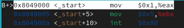
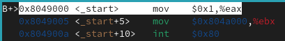
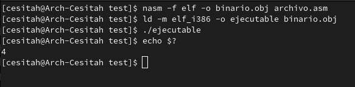

Capítulo 1: Escribir en Assembly
Assembly es muy difícil cuando no conoces qué es un byte, una word y todos esos conceptos básicos que he explicado en la introducción. También es importante saber que ningún compilador te va a dar todo hecho, por eso también hemos hablado de cómo generar ejecutables. Cuando los conoces, es un lenguaje que, con sus problemas, resulta bastante simple.
Si nunca en la vida has visto código assembly, dedica el tiempo que necesites a entender cada parte de este capítulo. Es probable que, si no lo haces, te cueste mucho continuar. Si ya controlas el lenguaje, siéntete libre de saltarte este capítulo.
Tabla de contenidos
- Los registros: qué son y cómo usar algunos de ellos
- Sintaxis de assembly: las directivas
- Las instrucciones: movimientos y operaciones
- Más instrucciones: saltos y condiciones
- Símbolos y pointers: cómo usar la sección .data
- El stack: la memoria más allá de los pointers
- Resumen
Los registros: qué son y cómo usar algunos de ellos
En la introducción hemos tratado la memoria RAM, que almacena una sucesión de bytes. Actualmente se venden RAMs de 4 e incluso 32 GB. Nosotros, en un principio, vamos a comunicarnos con memorias mucho más pequeñas, pero infinitamente más rápidas, que están integradas en el mismo procesador. Esas memorias se llaman registros.
| Name | Reg. | Preserved | Usage |
|---|---|---|---|
| Accumulator | ax | Valor de return | |
| Base | bx | ✓ | |
| Counter | cx | arg4 | |
| Data | dx | arg3 | |
| Source | si | arg2 | |
| Destination | di | arg1 | |
| Base Pointer | bp | ✓ | Base del stack (opcional) |
| Stack Pointer | sp | ✓ | Tope del stack* |
| Instruction Pointer | ip | ||
|
Fuente de la tabla: x86-64 Cheat Sheet en Greg's Web. *El registro sp debe estar alineado a 16 bits. |
Esta tabla define algunos de los registros de 16 bits (como explicaremos, hay más registros, y no solo los hay de 16 bits).
El tick de la columna preserved indica que al llamar una función, está garantizado que el valor guardado en el registro no cambiará.
Al llamar a una función en Linux, normalmente utilizaremos como argumentos los registros di, si, dx, cx. Esta es una convención de llamada propia de Linux. Nos interesa bastante poco, debido a que nosotros no vamos a tener un sistema operativo como base.
Los registros bp y sp representan la base y el tope del stack. Si no sabes qué es el stack, es muy recomendable que leas la sección sobre el stack del capítulo 1.
Todos los registros tienen un espacio máximo de 64 bits (o 32, si tu procesador es de 32 bits), puedes acceder a su byte más pequeño sufijándolo con una l, a su penúltimo byte sufijándolo con una h, a su versión de 16 bits con el nombre de la tabla. Se accede a la versión extendida (de 32 bits) prefijándolo con una e, y a la de 64 bits (si existe) prefijándolo con una r... Tranqui, con la siguiente tabla lo vas a entender mejor.
Por ejemplo, pongamos que los bytes de esta tabla son el contenido del registro Accumulator (puesto en la tabla como ax). Depende del nombre que escribamos para acceder a él, tendremos un número de bytes u otro:
| 0x0 | 0x1 | 0x2 | 0x3 | 0x4 | 0x5 | 0x6 | 0x7 |
|---|---|---|---|---|---|---|---|
| 10000000 | 01000000 | 00100000 | 00010000 | 00001000 | 00000100 | 00000010 | 00000001 |
al = 1
ah = 10 = 2
ax = 10 00000001 = 513
eax = 1000 00000100 00000010 00000001 = 134.480.385
rax = 10000000 01000000 00100000 00010000 00001000 00000100 00000010 00000001 = 9.241.421.688.590.303.745
Sintaxis de assembly: las directivas
En assembly puedes definir 3 cosas distintas: directivas, instrucciones y símbolos. Las directivas son anotaciones que van dirigidas al compilador (en nuestro caso, a NASM) para que las tenga en cuenta a la hora de producir lenguaje máquina.
La primera linea del código que hemos creado en la introducción era una directiva:
global _startEsto no se va a traducir a nada en lenguaje máquina. No habrá rastro de esta linea en el ejecutable final. Se utiliza solamente para que el compilador pueda ver el símbolo _start que hemos definido más abajo. Es importante que este símbolo sea visible porque en NASM, si hay un símbolo que se llame _start, por ahí es por donde se empieza a ejecutar el código... aunque ya veremos que esto no se aplica en un entorno freestanding.
También hemos usado la directiva section, que le cuenta al ejecutable dónde vamos a guardar nuestras variables y dónde vamos a guardar nuestro código:
section .data
; Aquí van las variables
section .text
; Aquí el código
Ojo, porque también hemos escrito símbolos, que son señales en medio del código que avisan al compilador de que anote una dirección en la memoria. Las usamos para dividir partes de nuestro código y darle nombre a las variables. Por ejemplo, pongamos que el programa empieza a cargarse en la dirección 0x1500 de la RAM. Cada vez que pone +1 byte, o +2, estamos anotando lo que pesa la instrucción anterior en el ejecutable final:
section .data
variable1: ; variable1 = 0x1500
db 6
; +1 byte
variable2: ; variable2 = 0x1501
db 18
; +1 byte
section .text
_entry: ; _entry = 0x1502
jmp parte_dos
; +2 bytes
parte_dos: ; parte_dos = 0x1504
...Ten en cuenta que ni las directivas ni los símbolos se escriben en el ejecutable final. Lo que sí se va a escribir son nuestras variables (que hemos definido con la directiva db o define byte) y las instrucciones, como jmp. Por eso, los símbolos que hemos definido en este código, que son variable1, variable2, _entry y parte_dos, tienen los valores 0x1500, 0x1501, 0x1502 y 0x1504, respectivamente.
La siguiente tabla muestra cómo se traduce un código assembly a un archivo binario básico. El código mostrado define una variable de 2 bytes con el valor 500 (dw 500) y salta a una sección llamada exit. En el ejecutable final, no se reflejan ni las directivas ni los símbolos:
global _start
section .data
var:
dw 500
section .text
_start:
jmp exit
exit:
...| var | +1 | _start | +1 |
|---|---|---|---|
| 500 | jmp exit | ||
| exit | +1 | +2 | +3 |
| ... | |||
*Al poner ... simplemente indicamos que hay más código a continuación.
Puedes ver que las directivas global y section no se escriben en el código binario. Tampoco se escriben los símbolos _start y exit, simplemente nos sirven a nosotros y al compilador para guiarnos. El caso de la directiva dw es curioso: su función es escribir un valor directamente en el ejecutable, por lo que la directiva en sí no se traslada, pero el valor que le hemos proporcionado como argumento sí. También puedes ver que la instrucción jmp "dirección" ocupa exactamente 2 bytes.
Como curiosidad: los símbolos proporcionados como argumentos a las instrucciones, cuando pasan al ejecutable, pierden el nombre, y se convierten sencillamente en la dirección a la que apuntan. Por ejemplo: la instrucción jmp parte_dos acabará convertida en jmp 0x1504. Esto no está puesto así en la ilustración sería algo más difícil entenderla.
Las instrucciones: movimientos y operaciones
Vamos a recuperar el programa que escribimos en la introducción. Su código era este:
global _start ; Símbolo para el enlazador
section .data ; SECCIÓN DE DATOS 🠓
section .text ; SECCIÓN DE CÓDIGO 🠓
_start: ; Entrada al programa:
mov eax, 1 ; eax = 1 (función de cierre)
mov ebx, 5 ; ebx = 5 (código de salida)
int 0x80 ; Llamada a LinuxEste programa usa algunas instrucciones que ahora ya podemos explicar con cierta soltura:
- mov <destino>, <fuente>: copia el valor de <fuente> hacia <destino>. En este caso, estamos moviendo valores literales (como 1) a un registro (como eax).
- int <número>: interrumpe el procesador para llamar a la función nº <número> de la IVT. Ya aprenderemos más sobre esto.
Para aprender nuevas instrucciones, vamos a centrarnos en el código bajo el símbolo _start. Por ejemplo, así es como podemos conseguir que el ejecutable cierre con el código de salida 10 usando las instrucciones add, inc y sub:
mov eax, 1 ; eax = 1 (función de cierre)
mov ebx, 5 ; ebx = 5 (código de salida)
add ebx, 9 ; ebx = ebx + 9 = 14
inc ebx ; ebx = ebx + 1 = 15
sub ebx, 5 ; ebx = ebx - 5 = 10
int 0x80 ; Llamada a LinuxSi lo compilas, enlazas y ejecutas e introduces el comando echo $? en el terminal (tal y como hicimos en la introducción) verás que el código de salida ahora es 10. Aquí viene un ejemplo con las instrucciones mul y div:
mov ebx, 5 ; ebx = 5 (código de salida)
mov eax, 6
mul ebx ; eax = eax * ebx = 6 * 5 = 30
mov ebx, 2
div ebx ; eax = eax / ebx = 30 / 2 = 15
mov ebx, eax ; ebx = eax = 15
mov eax, 1 ; eax = 1 (función de cierre)
int 0x80 ; Llamada a LinuxEstas son más difíciles, ¿eh? Mira, tanto mul como div hacen su operación usando lo que haya en ax y el registro que les proporciones, y guardan el resultado en ax, es decir:
mul bx ; ax = ax * bx
div bx ; ax = ax / bxPor si eso fuera poco, la instrucción div realiza la división, guarda en ax el resultado y además guarda en dx el resto.
div bx ; ax = ax / bx
; dx = ax % bxMás instrucciones: saltos y condiciones
Hasta ahora, todo nuestro código lo hemos escrito bajo un mismo símbolo: _start. Eso limita mucho nuestras capacidades. Antes de pasar de las instrucciones a otros conceptos, vamos a aprender rápidamente a movernos entre símbolos:
_entry:
mov eax, 1
jmp next
next:
mov eax, 2
jmp _entryLa instrucción jmp se usa para saltar hacia un símbolo dentro (o fuera) de nuestro ejecutable. En este ejemplo, el registro eax recogerá el valor 1 y saltaremos al símbolo next, donde el registro recogerá el valor 2 y volverá a empezar. Estará cambiando constantemente de valor, y la ejecución no terminará nunca si no forzamos el cierre del programa.
También podemos realizar saltos condicionales, como, por ejemplo, este:
_entry:
mov eax, 2
mov ebx, 2
cmp eax, ebx
je equal
jmp other
equal:
sub ebx, 1
other:
...Este código carga el valor 2 a los registros eax y ebx. Los compara con la instrucción cmp y después, si son iguales, salta al símbolo equal. Si no son iguales, seguirá ejecutando lo siguiente, que es un salto hacia el símbolo other. Esto lo hace porque si siguiera directo para adelante, ejecutaría el código que hay bajo equal de todas formas.
Es posible que sientas que tienes un conocimiento muy limitado aún, pero ya sabiendo esto empiezas a poder escribir cosas muy interesantes en este lenguaje. Irás aprendiendo más saltos condicionales según avancemos.
Símbolos y pointers: cómo usar la sección .data
Todos los datos y el código de nuestro programa estarán en algún momento cargados en alguna dirección de la RAM. Por ejemplo, así es como se ve el código del ejecutable que creamos en la introducción si lo abrimos en GDB (el programa de detección de errores de GNU):

El símbolo _start del programa es equivalente a la dirección 0x08049000, y las 3 instrucciones ocupan unos 12 bytes. Visto en un mapa sería algo así:
| _start | +1 | +2 | +3 | +4 | +5 | +6 | +7 | +8 | +9 | +10 | +11 |
|---|---|---|---|---|---|---|---|---|---|---|---|
| mov eax, 1 | mov ebx, 5 | int 0x80 | |||||||||
Por fin vamos a usar la sección de datos. Vamos a ver qué cambia en el mapa de memoria si defino un byte con el nombre number y el valor 4. Lo voy a hacer usando la instrucción db. Si quieres escribir una word, double-word o quad-word, puedes usar dw, dd o dq, respectivamente.
global _start ; Símbolo para el enlazador
section .data ; SECCIÓN DE DATOS
number: ; Símbolo "number":
db 4 ; 1 byte con el valor 4.
section .text ; SECCIÓN DE CÓDIGO
_start: ; Entrada al programa:
mov eax, 1 ; eax = 1 (función de cierre)
mov ebx, 5 ; ebx = 5 (código de salida)
int 0x80 ; Llamada a Linux
| number | _start | +1 |
|---|---|---|
| 4 | mov eax, 1... | |
| +2 | +3 | +4 |
| ...mov eax, 1 | ||
| +5 | +6 | +7 |
| mov ebx, 5... | ||
| +8 | +9 | +10 |
| ...mov ebx, 5 | int... | |
| +11 | ||
| ...0x80 | ||
El mapa es casi igual, pero hemos añadido un byte al principio, y ahora podemos usar ese valor en el programa para devolver el código de salida 4. Si lo intentas, a lo mejor sientes la tentación de sustituir la instrucción mov ebx, 5 por esta linea:
; Código con errores
mov ebx, numberEl programa cerrará con el código de salida 0, pero ese no es el número que tenemos guardado en number... Para arrojar más luz sobre este misterio, vamos a desensamblar nuestro código otra vez con GDB y ver qué hemos escrito exactamente.

Se ve perfectamente en la línea 2. Hemos mandado a ebx el número 0x804a000, en vez de el 4 que está guardado en number. Ese número tan raro es, simplemente, la dirección en la que está guardado nuestro número, no el número en sí. Hazte a la idea de que al escribir number estamos escribiendo una dirección en la memoria, si queremos el valor que hay guardado en esa dirección, lo escribiremos entre corchetes: [number].
Vamos a poner la instrucción correcta:
mov ebx, [number]Y al compilarlo, enlazarlo, ejecutarlo y comprobar el código de salida... ¡voila!

Hemos conseguido apuntar a la variable, y no mandar simplemente su dirección. Por ese motivo, el código de salida ahora es el que queríamos: 4. Como apunte final: la razón por la que el código de salida antes era 0 y no 0x804a000 es porque Linux no acepta códigos de salida mayores a 255. Si detecta uno, devuelve directamente el valor 0.
El stack: la memoria más allá de los registros
| esp | 'a' |
|---|---|
| esp + 4 | 'l' |
| esp + 8 | 'o' |
| esp + 12 | 'H' |
El stack es una parte de la memoria que puedes asignar arbitrariamente cuando entras a una función. Puedes meter un valor al stack usando la instrucción push, y sacarlo usando la instrucción pop. Está íntimamente relacionado con los registros bp y sp.
Vamos a explicar bien lo que ocurre cuando metes o sacas un valor de esta estructura tan curiosa. A la izquierda tienes el mapa de un stack con 4 valores, que se han introducido usando las siguientes instrucciones en Assembly:
push 'H'
push 'o'
push 'l'
push 'a'Fácil, ¿no? Lo primero que puedes comprobar es que el valor superior del mapa tiene la dirección esp, el siguiente esp + 4, luego +8, +12... Eso pasa porque los valores del stack ocupan el mismo número de bits que el tipo de código que estemos produciendo. En este caso, estamos produciendo código de 32 bits, así que los valores del stack ocupan 32 bits (4 bytes).
Otra cosa interesante es que nuestro mapa muestra la palabra Hola al revés. Esto ocurre porque al ejecutar push el stack crece para atrás, y esp se sitúa donde está nuestro nuevo valor. Es decir, el stack ha ido creciendo hacia la izquierda en la memoria, y esp se ha ido ajustando a su nuevo tope, tal que así:
| esp | 'H' |
|---|
| esp | 'o' |
|---|---|
| esp + 4 | 'H' |
| esp | 'l' |
|---|---|
| esp + 4 | 'o' |
| esp + 8 | 'H' |
| esp | 'a' |
|---|---|
| esp + 4 | 'l' |
| esp + 8 | 'o' |
| esp + 12 | 'H' |
Es muy importante que entiendas que el valor de esp se ha ido reduciendo: la 'H' siempre está en el mismo sitio. Es el valor del registro esp el que va reduciéndose para apuntar al nuevo tope del stack.
¿Cómo decidimos el valor inicial de esp? Si hacemos un ejecutable en Linux, normalmente el sistema operativo lo configura por nosotros para que no la liemos, pero eso no es así en un entorno freestanding. El stack tiene que estar en algún lugar vacío de la memoria, y tenemos que estar seguros de que no nos pasamos de tamaño, porque si lo hacemos podríamos sobreescribir memoria que no estaba vacía. Ya experimentaremos con esto más adelante.
Registros sp y bp
El registro sp (o esp en su versión de 32 bits) es un puntero que apunta al tope del stack, que siempre contiene la dirección del último valor guardado en el stack. Cuando ejecutas push, el procesador le resta 4 a su valor, y cuando ejecutas pop le suma 4.
El registro bp (o ebp) suele apuntar a la base del stack (es decir, si el stack no está vacío, recoge el primer valor que mandes mediante push). Sin embargo, declararlo es opcional y hay veces en las que no se puede asumir que tenga un valor válido. Se usa, sobre todo, para crear un nuevo stack en una parte distinta de la memoria. El valor de sp nunca debería ser mayor que el de bp.
Instrucciones push y pop
Ya has visto más o menos cómo funciona la instrucción push. Extiende el stack, mete un valor en su nuevo tope y actualiza el registro esp para que apunte a dicho valor. ¿Pero cómo recuperamos esos valores que hemos mandado al stack? Pues ahí entra en juego la instrucción pop, que escribe al registro que queramos el valor situado en el tope del stack, y actualiza esp para que apunte al valor anterior (si existe).
Por ejemplo, si tenemos este código:
push 0x1
push 0x2
push 0x3El stack habrá crecido de esta forma:
| esp | 0x1 |
|---|
| esp | 0x2 |
|---|---|
| esp + 4 | 0x1 |
| esp | 0x3 |
|---|---|
| esp + 4 | 0x2 |
| esp + 8 | 0x1 |
Ahora, vamos a sacar estos 3 valores del stack y los vamos a meter en los registros ecx, ebx y eax:
pop ecx
pop ebx
pop eaxEn este caso, eax contiene el valor 1, ebx contiene el valor 2 y ecx contiene el valor 3. El stack se ha ido reduciendo de la siguiente forma:
| esp | 0x3 |
|---|---|
| esp + 4 | 0x2 |
| esp + 8 | 0x1 |
| esp | 0x2 |
|---|---|
| esp + 4 | 0x1 |
| esp | 0x1 |
|---|
Puedes utilizar el stack tú mismo compilando el siguiente código con el mismo método que aprendimos en la introducción:
global _start
section .data
section .text
_start:
; Guardar en el stack el número 9
push 9
; Recuperarlo, emitirlo como código de salida y cerrar.
mov eax, 1
pop ebx
int 0x80
Tras ejecutarlo, si introduces el comando echo $?, te devolverá 9. Hemos conseguido mandarlo del stack a un registro, y de dicho registro al código de salida.
Resumen
Este capítulo tiene muchísima información. Tómate tu tiempo de repasar y consulta otros tutoriales de assembly más detallados si tienes interés. Hemos aprendido a definir directivas, instrucciones y símbolos, a manejar los registros y sus valores, y además, a usar la sección .data y el stack.
En el capítulo siguiente empezaremos con el sistema operativo. A partir de aquí es inevitable que suba un pelín la exigencia del manual, pero voy a hacer lo posible por no dar por hecho muchos conocimientos previos.